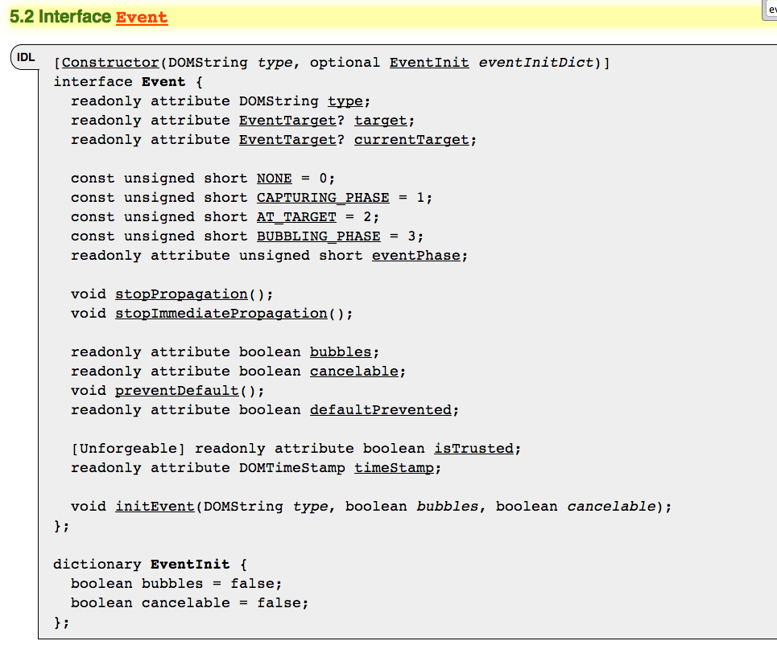

[constructor(DOMString path, optional SerialOptions options)]
interface SerialPort {}
interface SerialPort {
readonly attribute ReadableStream in;
readonly attribute WritableStream out;
}
interface SerialPort {
static Promise requestList ();
dictionary SerialOptions {
long baudrate = 9600;
octet databits = 8;
octet stopbits = 1;
ParityType parity = 'none';
long buffersize = 255;
boolean rtscts = false;
boolean xon = false;
boolean xoff = false;
boolean xany = false;
};
enum MealType { "rice", "noodles", "other" };
interface Meal {
attribute MealType type;
attribute float size; // in grams
void initialize(MealType type, float size);
};
'use strict';
var IDLType = require('WebIDL/types/IDLType'),
WebIDL = require('WebIDL');
WebIDL.Boolean = function(value) {
var type = 'Boolean';
if (!(this instanceof WebIDL.Boolean)) {
return converter(value);
}
IDLType.call(this, type, converter, value);
};
WebIDL.Boolean.prototype = IDLType;
function converter(V) {
var x = !! V;
return x;
}
return WebIDL.Boolean;